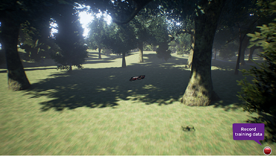

低空模拟器#


该项目基于 AirSim 项目，将其作为一个插件集成到 HUTB 项目中，配置方法请参考 链接 。
2017年，微软研究院创建了AirSim，作为人工智能研究和实验的模拟平台。五年来，这个研究项目已实现其目标，并取得了长足进展——成为共享研究代码和测试空中人工智能开发与模拟新想法的常用方式。此外，时间也推动了我们将技术应用于现实世界的方式不断进步，尤其是在空中机动和自主系统方面。例如，无人机送货不再是科幻故事，而是商业现实，这意味着新的需求需要满足。我们在此过程中收获颇丰，并感谢社区成员一直以来的积极参与。
本着不断发展的精神，我们将在明年发布一个全新的模拟平台，并随后存档原版 2017 年 AirSim。此后，用户仍然可以访问原版 AirSim 代码，但不会立即进行任何更新。我们将专注于开发一款名为 Microsoft Project AirSim 的新产品，以满足航空航天业日益增长的需求。Project AirSim 将提供一个端到端平台，用于通过模拟安全地开发和测试自主飞行技术。用户将受益于商业产品独有的安全、代码审查、测试、高级模拟和人工智能功能。随着 Project AirSim 发布的临近，我们将提供学习工具和功能，帮助您迁移到新平台并指导您使用产品。如需了解更多关于使用全新 Project AirSim 构建自主飞行技术的信息，请访问 https://aka.ms/projectairsim 。
微软与 IAMAI 携手合作，通过 AirSim 项目（AirSim 的升级版）推进高保真自主驾驶模拟技术。该项目基于 MIT 许可证发布，是 DARPA 支持计划的一部分。IAMAI 很荣幸能够为这项工作做出贡献，并在 github.com/iamaisim/ProjectAirSim 上发布了其版本的 AirSim 项目代码库。
欢迎来到 AirSim#
AirSim 是一款基于虚幻引擎（我们现在也发布了Unity实验版）的无人机、汽车等模拟器。它是开源的跨平台仿真器，支持使用 PX4 和 ArduPilot 等主流飞行控制器进行软件在环仿真，以及使用 PX4 进行硬件在环仿真，以实现物理和视觉上逼真的模拟。它以虚幻插件的形式开发，可以轻松集成到任何虚幻环境中。同样，我们也发布了 Unity 插件的实验版。
我们的目标是将 AirSim 开发为一个人工智能研究平台，用于试验自动驾驶汽车的深度学习、计算机视觉和强化学习算法。为此，AirSim 还开放了 API，以便以独立于平台的方式检索数据和控制车辆。
观看 1.5 分钟的快速演示
AirSim 中的无人机

AirSim 中的汽车

如何获取#
Windows#
Linux#
macOS#
 * 构建它
* 构建它
有关更多详细信息，请参阅 使用预编译二进制文件 文档。
如何使用#
文档#
查看有关 AirSim 各个方面的 详细文档 。
手动控制#
如果您拥有如下所示的遥控器 (Remote Control, RC)，则可以在模拟器中手动控制无人机。对于汽车，您可以使用箭头键手动驾驶。


程序控制#
AirSim 提供 API，方便您在模拟中以编程方式与飞行器进行交互。您可以使用这些 API 检索图像、获取状态、控制飞行器等等。这些 API 通过 RPC 公开，并可通过多种语言访问，包括 C++、Python、C# 和 Java。
这些 API 也可作为独立的跨平台库的一部分使用，因此您可以将它们部署到车辆的配套计算机上。这样，您就可以在模拟器中编写和测试代码，然后在真实车辆上执行。迁移学习及相关研究是我们的重点领域之一。
请注意，您可以使用 SimMode 设置 来指定默认车辆或新的ComputerVision 模式，这样您就不会在每次启动 AirSim 时收到提示。
收集训练数据#
您可以通过两种方式从 AirSim 生成用于深度学习的训练数据。最简单的方法是直接按下右下角的“录制”按钮。这将开始记录每一帧的姿势和图像。数据记录代码非常简单，您可以根据自己的喜好进行修改。

按照您所需的方式生成训练数据的更好方法是访问 API。这使您可以完全控制记录数据的方式、内容、位置和时间。
计算机视觉模式#
AirSim 的另一种使用方式是所谓的“计算机视觉”模式。在此模式下，您无需使用车辆或物理引擎。您可以使用键盘在场景中移动，或使用 API 将可用的摄像头定位到任意姿势，并收集诸如深度、视差、表面法线或物体分割等图像。
天气效果#
按 F10 查看各种可用的天气效果选项。您还可以使用 APIs 控制天气。按 F1 查看其他可用选项。

教程#
- 视频 - 使用 Pixhawk 教程设置 AirSim
- 视频 - 使用 AirSim 和 Pixhawk 教程
- 视频 - 使用 AirSim 的现成环境
- 网络研讨会——利用高保真仿真实现自主系统
- 使用 AirSim 进行强化学习
- 自动驾驶食谱
- 使用 TensorFlow 实现简单的防碰撞
参加#
论文#
更多技术细节请参阅 AirSim 论文（FSR 2017 会议）) 。请引用：
@inproceedings{airsim2017fsr,
author = {Shital Shah and Debadeepta Dey and Chris Lovett and Ashish Kapoor},
title = {AirSim: High-Fidelity Visual and Physical Simulation for Autonomous Vehicles},
year = {2017},
booktitle = {Field and Service Robotics},
eprint = {arXiv:1705.05065},
url = {https://arxiv.org/abs/1705.05065}
}
贡献#
如果您正在寻找可以做出贡献的领域，请查看 未解决的问题 。
谁在使用 AirSim？#
我们维护着一份我们所知的一些项目、人员和团体的 列表 。如果您希望被收录在此列表中，请 在此处提交申请 。
联系#
加入我们的 GitHub 讨论组 以了解最新动态或提出任何问题。
我们在 Facebook 上还有一个 AirSim 小组。
最新动态#
- 电影摄影机
- ROS2 包装器
- 列出所有资产的 API
- movetoGPS API
- 光流相机
- simSetKinematics API
- 从现有的 UE 材质或纹理 PNG 动态设置对象纹理
- 能够产生/销毁灯光并控制灯光参数
- Unity 支持多架无人机
- 通过键盘控制手动相机速度
- 使用AirSim的项目
如需查看完整的变更列表，请查看我们的 变更日志
常问问题#
如果您遇到问题，请查看 常见问题解答 并随时在 AirSim 存储库中发布问题。
行为守则#
本项目已采用 微软开源行为准则 。更多信息请参阅行为准则常见问题解答，或联系 opencode@microsoft.com 提出其他问题或意见。
许可证#
本项目遵循 MIT 许可证发布。请查看 许可证文件 了解更多详情。